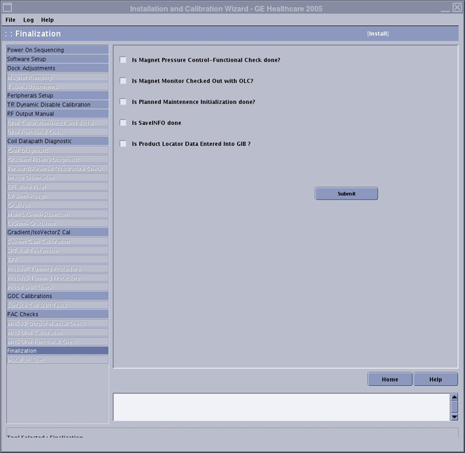

Operating Documentation
Direction 5440000, Rev# 5
Signa HDxt Service Methods
Module Version 3.0, Version Date 8/19/08
Operating Documentation |
| Required Persons | Preliminary Reqs | Procedure | Finalization |
|---|---|---|---|
| 1 | Not Applicable | 45 mins | Not Applicable |
Finalization can be run at any time during the install flow. It is one of the final steps of the Installation Portion of the Installation Calibration Wizard. During Finalization, there are six tasks that must be completed and checked off:
Magnet Monitor Checkout
Functional Check of Magnet Pressure Control
Initialize Planned Maintenance
Perform Save Info
Enter Product Locator information in GIB
Insert the Service Key
Launch the Service Browser (Common Service Desktop)
Click on the Calibration Tab.
If you are in Install mode, click on [Install and Calibration Wizard] ⇒ [Click here to start this tool].
See Illustration 1.
Illustration 1: Finalization

Call the On Line Center to perform checkout of the Magnet Monitor. Be prepared to provide the Cryogen ID. The customer provides the Cryogen ID, usually at the same time as they provide the System ID. When this is complete, check the box next to “Is Magnet Monitor Checkouted with OLC?”
Perform Magnet Pressure Control Functional Check. Do this by viewing pressure reading on the Magnet Monitor. The pressure reading should be between 3.9PSI-4.1PSI. When this is complete, check the box next to “Is Magnet Pressure Control Functional Check done?”
Initialize Planned Maintenance Initialization. When this is complete, check the box next to “Is Planned Maintenance Initialization done?”
Perform a Verification of SaveInfo Data. When this is complete, check the box next to “Is Save Info done?”
Enter Product Locator information in Global Installed Base. This can be done one of two ways. Collect all Product Locator Cards from equipment, then either:
| NOTE: | For a full list of all the components that should have ICD cards with the install/upgrade that you are performing see: HDv Items to be entered in GIB. |
If you do not have easy access to GE Intranet Connectivity, complete the information on the cards and send via regular mail.
If you have a connection to GE Intranet,
Use web link to GIB: http://gib.gehealthcare.com/.
Log on using SSO # and password.
Select Global Installed Base Entries.
Scroll down and enter the customer's System ID and Country.
Click on [Submit].
vi. Click on [New Entries]:
For Model - enter the GE Part Number (example:2357500)
For Serial - enter the system cabinet serial number (example: 00000259976MR9)
For Inst./Deinst Date (YYYY-MM-DD): - enter the system installation date shown at the top of the page
For Add (A): - enter A
Click on [Submit]
When this is complete, check the box next to “Is Product Locator Data entered into GIB?”
For items that the new components replace, remove their association from the system. Locate the items in the list of items associated with the system on GIB, and enter Delete (D) - [enter D].
Click [Submit].
Dispatch your hours for the install.
If there are remaining steps in the Installation Calibration Wizard, return to the ICW procedure for information regarding how to advance to the next calibration and for links to other calibration procedures.
If all the steps of the Installation Calibration Wizard are complete and have passed, close both the Installation Calibration Wizard and the Common Service Desktop. The next time the Installation Calibration Wizard is accessed from the Common Service Desktop ⇒ Calibration tab, the wizard will be in Maintenance Mode. Information for Maintenance Mode can be found in Install and Calibration Wizard.